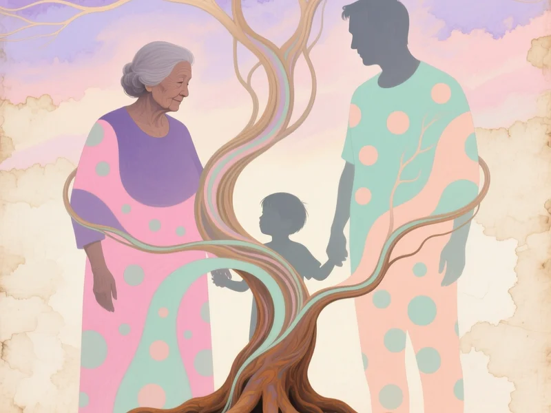

Focusing: ascoltare il corpo
Dieci minuti per sentire cosa dice il corpo prima che parta la reazione automatica. Passi concreti per ogni stile.
Leggi l'articoloQui l'attaccamento incontra la vita quotidiana: famiglia, lavoro, sesso, lutto, denaro. Ogni tema parte da un box «In pratica» con qualcosa da notare o provare subito.
Dieci minuti per sentire cosa dice il corpo prima che parta la reazione automatica. Passi concreti per ogni stile.
Leggi l'articolo
L'intimità è vulnerabilità e fiducia insieme. Cosa notare nel corpo quando ansia, ritiro o oscillazione entrano in scena.
Leggi l'articolo
Con i genitori da adulti rivedi il pattern originale. Confini, pause e cicli che si ripetono tra generazioni.
Leggi l'articoloNelle amicizie il panico è più basso, ma lealtà e reciprocità restano un termometro. Chi inizia i contatti? Chi sostiene chi?
Leggi l'articoloCapi, colleghi, team: il bisogno di riconoscimento o il ritiro si ripetono anche in ufficio. Cosa fare quando il corpo si attiva al lavoro.
Leggi l'articoloDenaro e sicurezza materiale toccano lo stesso sistema di attaccamento. Dipendenza, controllo, distanza: pattern da osservare in coppia.
Leggi l'articoloUn figlio che dipende da te attiva pattern antichi. Co-regolazione, pause e cosa dire quando il corpo va in overload.
Leggi l'articoloLa perdita attiva il sistema di attaccamento in modo intenso. Ogni stile elabora diversamente: cosa aspettarsi e quando chiedere supporto.
Leggi l'articoloIl tradimento è una ferita d'attaccamento. Reazioni per stile, riparazione del legame in EFT e passi pratici senza fretta di perdonare.
Leggi l'articoloLa fine di una relazione mostra il pattern senza filtri. No-contact, lutto relazionale e cosa aiuta per ogni stile.
Leggi l'articolo
Consapevolezza, non trasformazione forzata. Tre fasi, tempi realistici e segnali che il pattern perde il controllo automatico.
Leggi l'articoloOgni approfondimento segue quattro stili (Sicuro, Ansioso, Evitante, Oscillante) e tre livelli di intensità (basso, medio, alto).
In ogni pagina trovi: